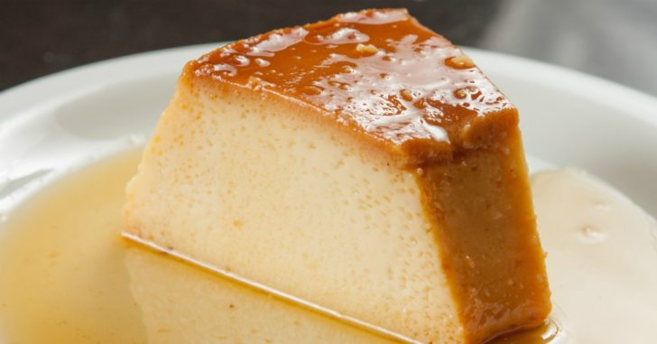

Home
Flan

Description
Classic homemade flan.
Ingredients
- Milk 500ml
- Sugar 100gr
- Eggs 4/5
- Vanilla essence 1tsp
Steps
- Mix the eggs with the sugar in a bowl.
- Add the milk and the vanilla essence and mix again.
- Pour it on a ramekin with caramel, put the ramekin on a baking tray with warm water and cover it with aluminum foil.
- Bake for 40 to 60 min at 160°.
- Take the ramekin out of the tray and let it cool to room temperature, then place it on the fridge covered with foil for about 6 hours.
- To serve run a knife around the borders of the ramekin, then quickly and gently flip the ramekin over a plate.